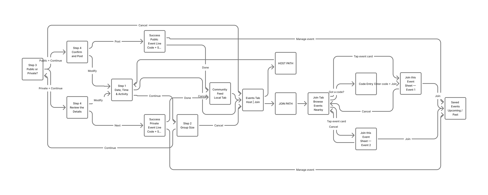

Overview
01AllTrails is the world's largest trail-navigation platform, with more than 65 million registered users as of 2024. Yet none of those users can coordinate a hike with another member from inside the app itself.
This project introduces a peer-to-peer Group Hike system into AllTrails' existing Community tab. Any user can host an event tied to a specific trail, designate it public or private, and distribute a join code, while any user can browse nearby events and join with a single tap. The feature lives entirely inside AllTrails, adding no new top-level navigation and disrupting no existing flow.
The project was completed solo as a four-week academic exercise in 2023.
Problem Statement
02AllTrails' social architecture is fundamentally retrospective. Users follow one another and see activity only after it has happened, tagging companions in hikes that have already occurred. The platform offers no coordination primitive, no mechanism by which a user can declare, "I'm hiking this trail on Saturday, who wants to come?"
A widely read product teardown observed that AllTrails never prompts users to connect a social graph during onboarding, limiting the organic, word-of-mouth growth that social platforms typically rely on. A separate analyst noted that AllTrails' user base skews heavily toward casual and intermediate hikers, precisely the group most likely to seek company, yet the product provides no way to act on that preference.
The consequence is a visible escape route. Hikers who want to organise a group migrate to Meetup, WhatsApp, or Facebook Groups, and many of those posts link back to AllTrails for the underlying trail data. AllTrails has become the information layer while competing platforms own the coordination layer. This feature closes that gap.
Research & Analysis
03Outdoor participation in the United States reached 175.8 million people in 2023, or 57.3% of Americans aged six and above, according to the Outdoor Industry Association's 2024 Participation Trends Report. Hiking ranked as the single most popular activity, with 20% participation. A critical detail sits underneath that headline: while overall participation is up, average session frequency dropped 11.4% from 2022. More people are hiking, but they are doing so less often.
Research also drew on App Store and Google Play reviews, along with posts from r/vancouver and outdoor hiking communities on Reddit. Three consistent themes emerged. First, Vancouver users described the city as socially difficult to break into, making hiking companions hard to find organically. Second, wildlife concerns surfaced repeatedly, with bears mentioned by name and users reporting greater confidence in the presence of others. Third, fitness mismatch emerged as a recurring frustration, with users wanting to hike alongside people of similar pace rather than hold a group back or be left behind.
The behavioural case for group hiking is well established. Schnall, Harber, Stefanucci, and Proffitt (Journal of Experimental Social Psychology, 2008) demonstrated that people standing at the base of a hill estimate its gradient as steeper when alone; with a friend present, the mean visual estimate dropped from 49.24 degrees to 44.07 degrees, and the effect intensified with the duration of the friendship. The presence of another person literally changes how physically demanding a trail appears. A 2025 Frontiers in Public Health review concluded that group hiking builds trust and a sense of belonging through shared physical challenge, while the NIH-funded GO-OUT randomized controlled trial found that community programmes offering structure, accountability, and social interaction measurably improved motivation to walk outdoors.
"Despite an abundance of UGC in the form of pictures and reviews, there is very little activity on AllTrails users' social feeds. The social aspect of AllTrails is like a barren desert."
"The app allows users to follow other users and engage with their activity but from what I've seen, engagement in that capacity is low, unlike Strava."
"The more I wanted to go hiking though, the harder it was to always find someone else to go hiking with me."
"Sometimes it's hard to find a partner or group to head into the backcountry with. It may be that you don't have a network of friends who share your interests."
"Hiking alone can get, well, lonely! Solo hiking is only satisfying for so long."
"I am so grateful to have met this group of amazing, like-minded women. We all met as complete strangers but quickly formed a friendship through a shared love of adventure."
Every major competitor offers a partial solution, yet none combines authoritative trail data with peer-to-peer event creation in a single product.
User Persona
04Research converged on a clear primary user: a young professional, recently relocated to a new city, who hikes regularly but struggles to find company. She relies on AllTrails to plan solo hikes, yet must switch to Meetup or Facebook whenever she wants to find people to join her.
Valentina Reynolds
Age 28 · Software Engineer · Vancouver, BC
Goals & Needs
- Meet people who share her pace and interest in moderate-difficulty trails
- Organise or join a hike with minimal back-and-forth coordination
- Feel safer on remote trails by hiking with a group
Pain Points
- Limited social circle after moving to Vancouver six months ago
- Work schedule makes organising anything across multiple apps exhausting
- No way to filter Meetup hiking events by trail difficulty or fitness match
Goals
05Social Coordination
Let any user create a real event tied to a real trail. Set a date and time, define group size, and share it without leaving AllTrails. The workflow should take under two minutes.
Safety by Design
Group hiking is empirically safer than solo hiking. Joining a group should be as frictionless as possible. Occupancy should be visible before a user commits so they know how full an event is.
Fit-Based Discovery
AllTrails already knows a trail's difficulty, distance, and estimated duration. Surface that data on the event card so users can self-select into the right group without a conversation.
User Flow
06The flow splits cleanly at the Events tab into two paths. Host and Join. The Host path runs four sequential steps through a bottom-sheet wizard before reaching a success state. The Join path branches further, into public discovery or private code entry, before reaching a single-tap join confirmation. Both paths terminate at Saved Events.

Design Decisions
07Six decisions shaped the architecture of this feature, each grounded in user research or established UX principles.
The host creation flow unfolds across four discrete steps: date and activity, group size, privacy, and review. This staged disclosure surfaces only what is needed at each point and sits within Baymard's three-to-four-step optimum for mobile task flows.
The wizard launches as a bottom sheet over the Community tab rather than routing to a new screen, keeping the trail context visible and the user anchored to where they came from, in line with Nielsen Norman Group guidance on focused, dismissible tasks.
Splitting the public and private paths at Step 3 into two distinct terminal states was the least obvious decision. An earlier single sharing screen showed private hosts community-posting options that contradicted their intent; the two-path model gives each success state a precise job.
The join code, a five-character alphanumeric string, gates private events so attendance is limited to people the host has directly invited, mirroring the pattern Eventbrite, Discord, and Komoot use for restricted-access events.
Each event card surfaces a live occupancy ratio, such as 3 of 10, providing social proof and letting users self-select out of events that feel too full or too empty without having to ask the host.
Both host and join paths terminate at Saved Events, a dedicated tab alongside Lists and Downloads where Upcoming and Past pills give the feature a persistent home outside the feed.
Visual Design
08The style guide extends AllTrails' existing brand identity. The primary palette uses deep forest greens for surfaces, with #142800 as the base and #2C5601 assigned to interactive containers. A high-luminance tertiary green, #5DE372, signals selection, completion, and system feedback, while white handles body text on dark surfaces.
The typeface is Beatrice, applied across heading, body, and label scales. It was chosen for its modern geometric character and its legibility at small sizes on mobile displays.

High Fidelity Screens
09Thirteen screens covering the complete Host and Join flows, both success states, and the Saved Events view.


Reflection
10This project executed a complete UX process in four weeks, moving from secondary research and competitor analysis through persona definition, user-flow architecture, iteration, and high-fidelity design. Every decision was grounded in a specific user need or a documented design principle rather than aesthetic preference.
The most useful constraint was the rule against introducing new navigation. Fitting Group Hike into the existing Community tab forced a disciplined conversation about what genuinely belonged in the feature and what did not. Route-planning tools, post-event recap screens, and chat threads were deliberately excluded so the feature could do one job completely rather than several jobs partially.
A structured design review after the hi-fi pass confirmed that the core flows are structurally sound and surfaced the clearest next priority: error-state coverage. The current design handles the happy path, but it does not yet account for a full event, a cancelled event, an expired join code, or a network failure during event creation. That remains the focus of the next design pass.